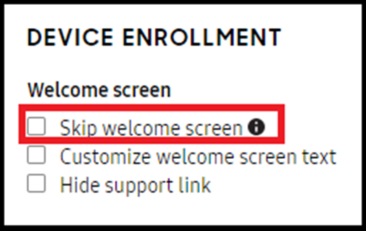
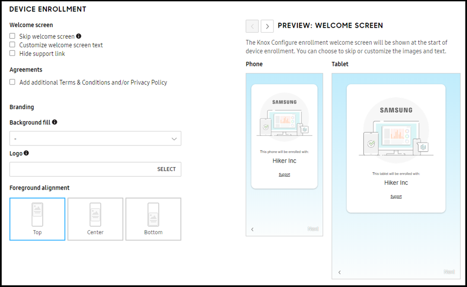
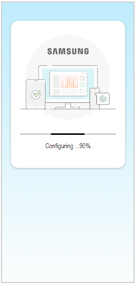
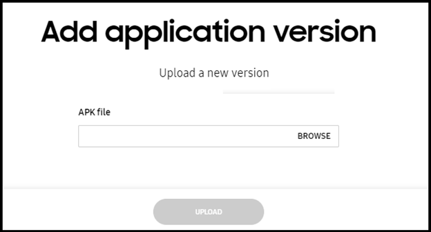

Knox Configure 1.23 release notes
Last updated July 26th, 2023
The following are the new features and enhancements introduced with this KCS 1.23 release:
Knox Configure (KC)
Option to skip the device welcome screen during enrollment
To date, a customer has been unable to skip the KC enrollment welcome screen to optimize their enrollment. With this new option, the welcome screen is skipped.

Customizable device enrollment screens
With this release, admins can now customize their device enrollment screens with consistent experience across the screen flow. A background image and a logo are shared for each screen in the enrollment flow. The text within the welcome screens remains customizable. If a customer doesn’t choose to customize the enrollment screen flow, then the default Knox Configure enrollment screens and KC images are used.

Simplified enrollment progress display
To date, the current device configuration screen displays detailed app and file download information at different completion intervals. This has resulted in not user-friendly experience for B2B2C end users and too much information for the most of actual use cases.

To remedy this situation, only a single simplified progress bar now displays in the foreground during configuration that reports cumulative downloading app and file progress at 10% increments. Background configuration items are not included in the displayed progress number.
Application versioning enhancements
To date, applications display in the app list without their current version information. Consequently, if there are several versions of an application it’s difficult to update the application in each profile, since the user needs to remove the current version in profile first, add the new version to the library, then add the new version to the profile again.

To help resolve this confusion, apps are now listed separately, with each displaying its current version, app name, description, profile assignment, size, and last modification date.
Admins can now change an application’s version information within the profile edit page by adding the new version information, then selecting it from the drop-down menu.
Bookmark shortcut improvements
To date, a default icon displays when a bookmark shortcut is added by Knox Configure to a device homescreen. This default icon is supposed to change to a permanent icon (apple touch icon or favicon of that Web page) when the device user visits that page using the device browser. However, the actual behavior is no icon change at all.
With this release, a bookmark added by Knox Configure appears uniquely from those added by the device’s supported browser to better differentiate Knox Configure added bookmarks.
Passcode for deleted devices
If a Locked device is deleted by a customer, reseller, or the Samsung Knox Team, a push notification for enabling a factory reset is sent to that device, and the device user can factory reset it in recovery mode. However, if push notification is delayed or not sent at all due to network issues, the device user cannot use that device until the notification is received.
To remedy this situation, the passcode for a Locked device is now retained within the device deletion log when the device is deleted, and no status change is reflected in the log.
Activity log updates for administrator events
With this release, the activity log has been enhanced to provide a broader range of administrator event changes. These administration events include, administrator invitations, administrator modifications, recent/reactivated/revoked invitations, and deactivated/reactivated accounts.
Tooltip updates for blue light filter settings
To date, the blue light filter has not been working properly for devices that utilize a S/W blue light filter (SM-T580 and SM-A105G). To provide additional coverage for this potential issue, the existing tooltip has been updated as follows:
“The Settings menu and quick panel might not reflect the selection made here, but the policy will be applied. And, this feature may not work properly in some devices which use S/W blue light filter. It is recommended to test before deployment.”
Warning message improvements for profile un-assignment
It has been reported to the KCS team that some customers do not know that un-assigning a profile from a device makes the device uncontrollable, and a push profile update is no longer possible. Consequently, more descriptive warning messaging is required to reduce the number of potential issues when un-assigning profiles.
The updated messaging will closely resemble the following: “Warning: Once a device is unassigned from a profile, it is not controllable from the console until it is enrolled and configured with a profile once again. So, a push update and/or reboot/factory reset is not possible.”
On this page
Is this page helpful?